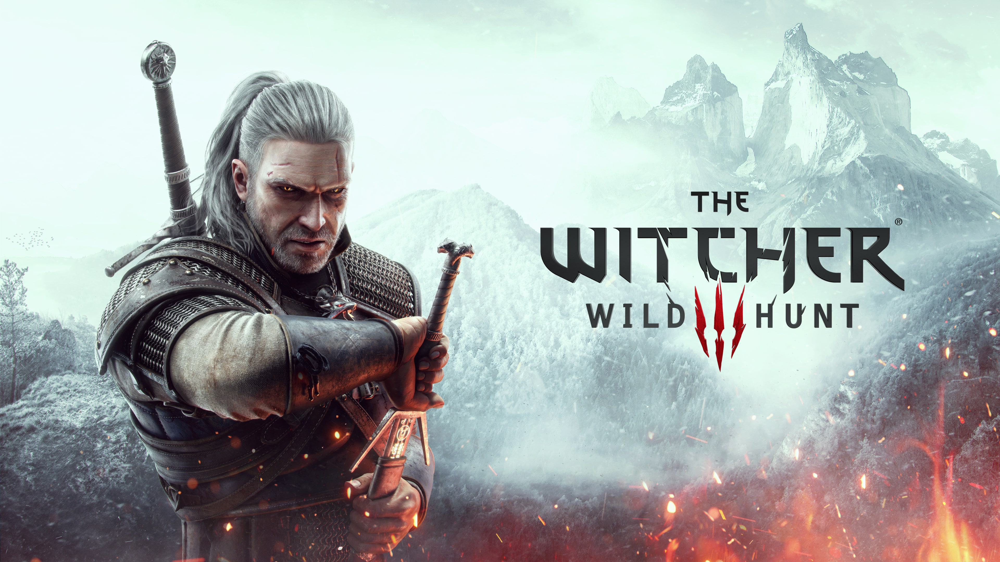

A The Witcher 3: Wild Hunt a CD Projekt RED által fejlesztett, 2015-ben megjelent akció-szerepjáték, amely Andrzej Sapkowski lengyel író regénysorozatán alapul. A játék egy hatalmas, nyitott világban játszódik, ahol Geralt of Rivia, a legendás witcher próbálja megtalálni az eltűnt Ciri-t, miközben a Wild Hunt közeleg.
A játék világa nem statikus dekoráció - a Kontinens minden sarka életre kel. Novigrad utcáin kereskedők alkudoznak, Velen mocsaraiban szörnyek lesnek, míg Skellige szigetein vikingek énekelnek. Minden falvának, minden NPC-nek megvan a maga története.
Nincs fekete és fehér - csak árnyalatok. Döntéseid nemcsak a fősztorit befolyásolják, hanem kisebb mellékszálakat is eltérő irányba terelnek. Egy mellékquest választása akár órákkal később is visszaköszönhet, váratlan következményekkel.
A Skellige-i viharok dühe, a nogradi erdők sötét rejtelmei, egy veszélyes szerződés teljesítése éjszaka - a játék minden pillanata átható hangulatot áraszt. A zene, a vizuális világ és a történetmesélés tökéletes szimbiózisa.